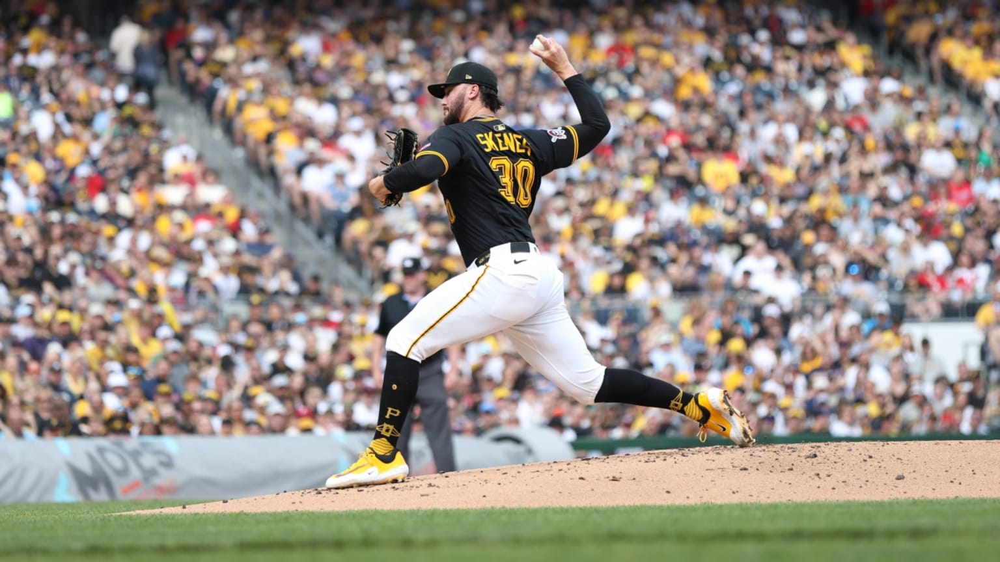
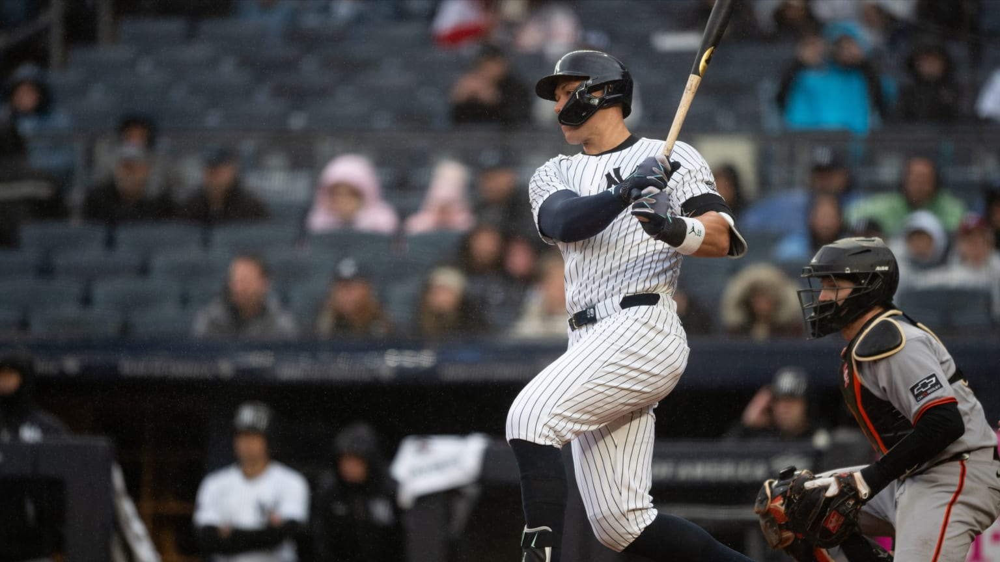

Financial Data Analytics · Baseball edition
What happens between the pitcher and the hitter?
This report examines pitch-by-pitch MLB Statcast data from five monthly samples in 2025, looking for the patterns that connect pitch selection, velocity, handedness, and batted-ball outcomes.

Paul Skenes · MLB game actionInteractive report lens
Zoom in on one month.
Choose a month to highlight it in the monthly charts and update the snapshot below.
The short version
Statcast turns a plate appearance into a sequence of measurable decisions. The pitcher chooses a pitch, the hitter chooses whether to swing, and the ball records what happened next. The findings below focus on five monthly samples from the 2025 season, which keeps the comparison within one season while preserving every regular-season pitch in the five-month window.

This is a large event-level panel, not a box-score snapshot.
Loading the finding…
The published data includes every regular-season pitch from April through August 2025. The months are stored as separate files so each stays below the 25 MB upload limit.
Chart annotation loading…
Four-seam fastballs are the main pitch in the sample.
Loading the finding…
The chart shows the ten most frequent pitch types. Small categories remain in the source data and in the dashboard.
Chart annotation loading…
Fastballs create the velocity ceiling; breaking balls create the separation.
Loading the finding…
Only pitch types with at least 1,000 observations are shown so that rare pitches do not dominate the ranking.
Chart annotation loading…
Pitch and contact metrics shift across the 2025 monthly samples.
Loading the finding…
The two lines use different units, so the chart is intended to show direction across the five months rather than compare their vertical heights.
Chart annotation loading…
Right-handed pitchers facing right-handed hitters form the largest matchup group.
Loading the finding…
P = pitcher throwing hand; B = batter stance. MLB IDs are used in the source file so that player identity remains consistent across monthly samples.
Chart annotation loading…
Field outs and strikeouts dominate the recorded plate-appearance outcomes.
Loading the finding…
An outcome is recorded only on the pitch that ends a plate appearance; pitches earlier in the same appearance have a blank outcome.
Chart annotation loading…
Pitch volume is concentrated among the busiest pitchers.
Loading the finding…
These labels use player names resolved from the MLB IDs in the source file. The interactive dashboard lets readers filter to any pitcher in the file.
Chart annotation loading…
High observed hit rates need a sample-size warning.
Loading the finding…
This ranking includes only batters with at least 100 completed plate appearances in the sample, but the threshold is still much smaller than a full season.
Chart annotation loading…
Data notes
How to read this dataset
Source and unit of observation
The data comes from MLB’s public Baseball Savant Statcast search export. One row is
one pitch in one regular-season game. The file covers April through August 2025. The
time columns are game_date, month, and season;
the group columns are the MLB player IDs
in pitcher and batter.
Rows and missing values
The download script keeps regular-season records and does not remove pitch events
simply because a result is missing. Statcast naturally has blank values for measures
that do not apply to every pitch: for example, exit velocity exists only for batted
balls put into play, and events exists only for the pitch that ends a plate appearance.
Rates and averages
Loading calculation definitions…
Explore the filters
The dashboard loads the CSV in the browser. It lets you filter by season, month, pitch type, pitcher, batter, and handedness, then switch the measure and the grouping variable used by the charts and table.